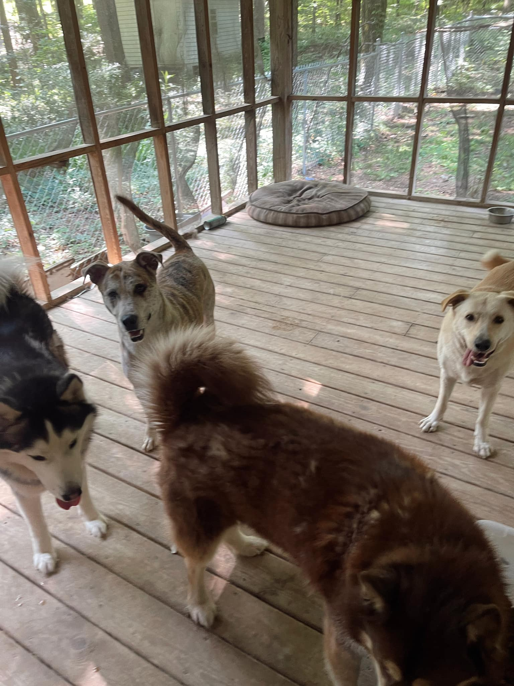
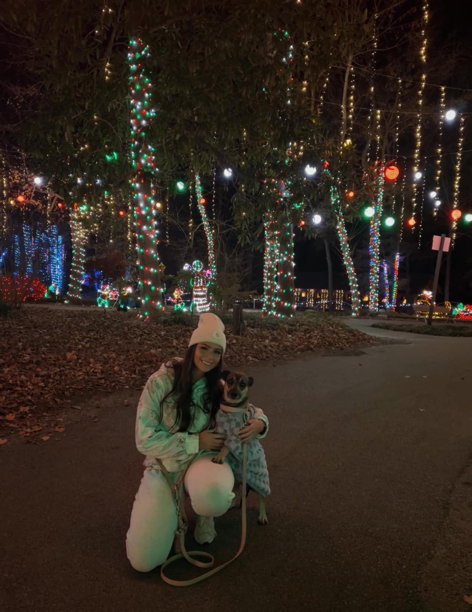
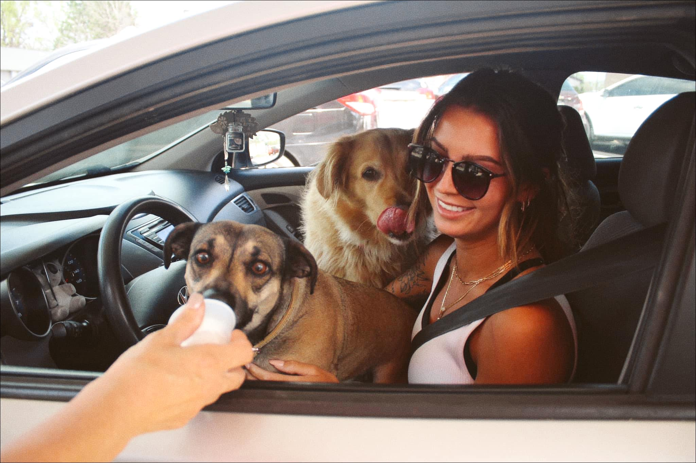

A Celebration of Dogs and Their Stories
Welcome to the gallery page, where every photo tells a story and every wagging tail brings a smile! Here, you’ll find a collection of heartwarming moments featuring the dogs Reilly has had the joy of caring for, training, and babysitting. From playful puppies to wise old souls, each dog has left a paw print on Reilly’s heart, and she’s excited to share these special memories with you. Whether it’s a snapshot of a fun day at the park, a cozy nap during a babysitting session, or a proud moment from training, this gallery is a tribute to the love, laughter, and unforgettable adventures that dogs bring into our lives. Sit back, scroll through, and let these furry faces brighten your day!



With love, Reilly! 💕